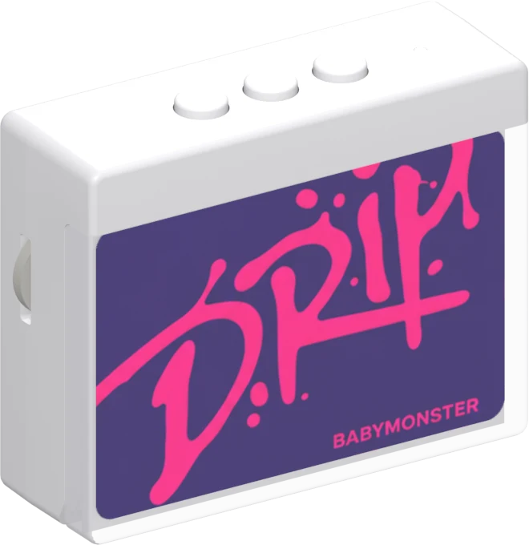
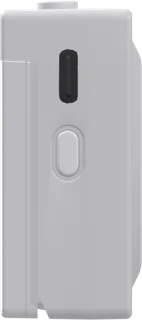
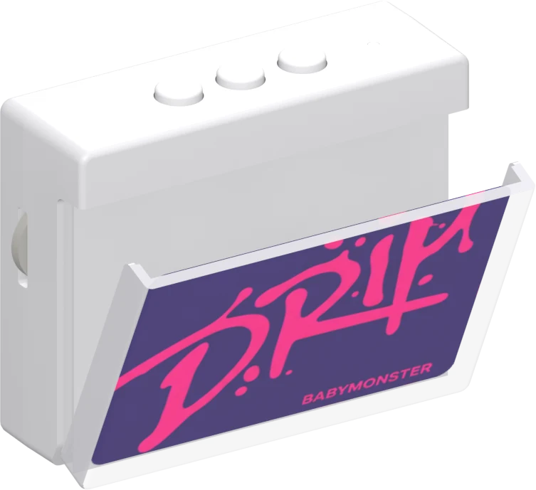
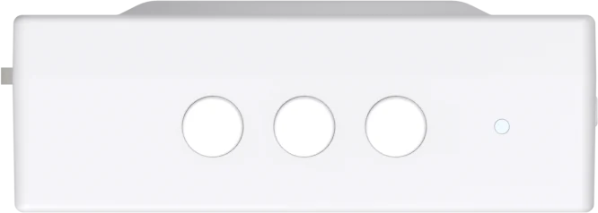
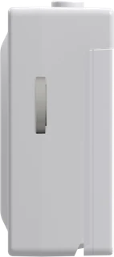

제품 사진 확대사용 순서
-
처음 한 번, Wi-Fi 연결
- 오른쪽 측면의 전원 버튼을 눌러 플레이어를 켜세요.
- NEMOZ 앱에서 플레이어를 검색해 블루투스(BLE)로 연결하세요.
- 플레이어가 찾은 Wi-Fi 목록이 앱에 표시되면 사용할 네트워크를 고르고 비밀번호를 입력하세요.
- 앱이 입력한 설정을 플레이어에 전달해요. 연결 성공이 표시되면 설정이 끝나요.
전원 버튼
-
전면 커버 열기
앞쪽의 투명 커버를 앞으로 여세요.

투명 전면 커버 -
NFC 피스 넣기
피스를 열린 커버 안쪽의 카드 거치부에 넣으세요.
-
커버 닫고 재생
음원이 저장되어 있으면 피스를 인식한 뒤 바로 재생돼요. 처음 듣는 피스는 Wi-Fi로 음원을 내려받아요.
-



처음 듣는 피스라면
저장된 음원이 없으면 Wi-Fi에 연결하고 NEMOZ 앱에서 다운로드를 시작하세요. 다운로드 중에는 윗면 오른쪽 LED가 흰색으로 깜빡여요. 저장이 끝나면 재생되고, 이후에는 오프라인에서도 들을 수 있어요.
- 시리즈 피스
- 시리즈 음원을 미리 받아 두고, 꽂은 피스에 해당하는 한 곡을 재생해요.
- 앨범 피스
- 앨범 단위로 다운로드하고 앨범 전체를 재생해요.
버튼과 볼륨 휠
재생과 볼륨은 플레이어 본체에서 조작해요.
- 1 이전
- 이전 곡
- 2 재생 / 일시정지
- 짧게 누르면 재생 또는 일시정지, 길게 누르면 랜덤 재생 켜기 또는 끄기
- 3 다음
- 다음 곡
- 4 상태 LED
- 색으로 상태 확인

볼륨 휠
휠을 돌려 음량을 조절하세요. 가장 작게 돌리면 무음이에요.
- 위 · USB-C
- 충전 케이블 연결
- 아래 · 전원 버튼
- 플레이어 켜기와 끄기
피스를 빼거나 바꾸면 어떻게 되나요?
피스를 빼면 재생이 멈춰요. 같은 피스를 다시 넣으면 이어서 재생되고, 다른 피스를 넣으면 처음부터 재생돼요.
첫 곡이나 마지막 곡에서 버튼을 누르면 어떻게 되나요?
첫 곡에서 이전 버튼을 누르면 마지막 곡으로, 마지막 곡에서 다음 버튼을 누르면 첫 곡으로 이동해요. 마지막 곡이 끝나면 재생이 멈춰요.
전원이 자동으로 꺼지는 조건은 무엇인가요?
재생이 멈춘 채 5분이 지나거나 피스를 뺀 뒤 5분이 지나면 전원이 꺼져요. 두 조건 중 먼저 충족되는 조건이 적용돼요.
상태 LED와 충전
윗면 맨 오른쪽 LED의 색과 깜빡임으로 상태를 확인할 수 있어요.
| LED 표시 | 플레이어 상태 |
|---|---|
| 빨강 | 배터리 15% 이하 |
| 파랑 점멸 | 앱 연결 또는 Wi-Fi 설정 중 |
| 노랑 점멸 | Wi-Fi 미연결 |
| 흰색 점멸 | 음원 다운로드 중 |
| 주황 | USB-C 충전 중 |
| 초록 | 충전 완료 |
저전력·앱 설정·Wi-Fi 미연결·다운로드 상태가 겹치면 표에서 위에 있는 상태가 우선 표시돼요.
피스를 넣었는데 음악이 바로 나오지 않아요.
LED가 흰색으로 깜빡이면 다운로드 중이에요. 3초 안에 재생이 시작되지 않으면 다운로드 중이라는 음성 안내가 나와요. 30초 안에 다운로드가 끝나지 않으면 Wi-Fi 연결을 확인하고 다시 시도하세요.